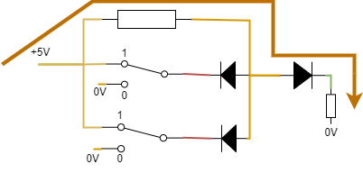

本レポートの内部構造に関してはhttps://github.com/daikou223/dedital-report.gitにて見れますので適時そちらご参照ください
論理ゲートはある規則に従って入力を出力に変換する，いわば関数のようなものである．主な論理ゲートはAND,NAND,OR,NOR,XOR,XNOR,NOTの7種であり，入力と出力の規則は表1の通りである．入出力は，0,1のみが許され，2,-1などの他の入力は禁止されている．これをbool代数という．電気回路としてはある閾値を下回る電圧を0，閾値を上回る電圧を1として扱う．(閾値に関しては実験法3-4にて触れる．)
| 論理 | 論理式 | 回路記号 | 真理値表 | ||
|---|---|---|---|---|---|
| 入力A | 入力B | 出力 | |||
| AND | \(A\cdot B\) | 0 | 0 | 0 | |
| 0 | 1 | 0 | |||
| 1 | 0 | 0 | |||
| 1 | 1 | 1 | |||
| NAND | \(\overline{A \cdot B}\) | 0 | 0 | 1 | |
| 0 | 1 | 1 | |||
| 1 | 0 | 1 | |||
| 1 | 1 | 0 | |||
| OR | \(A + B\) | 0 | 0 | 0 | |
| 0 | 1 | 1 | |||
| 1 | 0 | 1 | |||
| 1 | 1 | 1 | |||
| NOR | \(\overline{A + B}\) | 0 | 0 | 1 | |
| 0 | 1 | 0 | |||
| 1 | 0 | 0 | |||
| 1 | 1 | 0 | |||
| XOR | \(A \oplus B\) | 0 | 0 | 0 | |
| 0 | 1 | 1 | |||
| 1 | 0 | 1 | |||
| 1 | 1 | 0 | |||
| XNOR | \(\overline{A\oplus B}\) | 0 | 0 | 1 | |
| 0 | 1 | 0 | |||
| 1 | 0 | 0 | |||
| 1 | 1 | 1 | |||
| NOT | \(\overline{A}\) | 0 | 1 | ||
| 1 | 0 | ||||
図1のように配線を行う.通常コンセントからは電源は交流実効値100Vの電流が流れている．ACアダプターにて交流12Vまで減圧し，三端子レギュレーターにて5Vまで減圧を行う．そのうえ，コンデンサーの平滑化作用により揺れを少なくし，交流を直流をみなして扱うことができる．(...考察)
！三端子レギュレーター，ACアダプターでは減圧しているので，高温になることに注意すること
図2のように回路を作成する(導線の色を同一にするとわかりやすい).この回路では，スイッチが上になっているときは論理は1なっている．その時，LEDに流れる電圧が5Vになっているため点灯する．またLED3でも直前で5Vになっていれば，電流が流れ，点灯する．それぞれLED1,LED2の入力に対してLED3の点灯を確認すると以下の表2になる．
| LED1 | LED2 | LED3(出力) |
|---|---|---|
| 0 | 0 | 0 |
| 0 | 1 | 1 |
| 1 | 0 | 1 |
| 1 | 1 | 1 |
表1と表2を参照すると，OR回路と等しいことがわかる．よってこの回路はORの論理ゲートとしてふるまうことがわかる．(...考察)
図3のように回路を作成する．スイッチが上になっているときは論理が1であり，スイッチが下になったとき論理が0である．この回路ではLEDの点灯とスイッチが逆転していることに注意が必要である．(これ分かりにくいからLEDの前にNOTのICを使って同期させられないものかな...)LED3においてはOR同様に直前で5V点灯するのでそのままである．それぞれのスイッチ入力に対してLED3の点灯を確認すると表3になる．(これ分かりにくいからLEDの前にNOTのICを使って同期させられないものかな...)
| SW1 | SW2 | LED3(出力) |
|---|---|---|
| 0 | 0 | 0 |
| 0 | 1 | 0 |
| 1 | 0 | 0 |
| 1 | 1 | 1 |
表1,表3よりこの回路はANDゲートとしてふるまうことがわかる．
上の論理回路の作成では5Vでは論理が1であり,0Vでは論理が0として扱っていた．この実験はNANDではどこをしきい値を制定すべきであるかというのを明らかにする実験である.図11に示す回路を作成し，可変抵抗の値を変更することによって入力電圧を調整し，出力電圧との関係を探る．NAND回路として74HC00APのICを用いることとする．
この回路ではNANDに同一の電圧が入っているため，表1のNANDを確認するとこれはNOT回路と同一の挙動をすることがわかる．Vinでの電圧とVoutでの電圧の関係をグラフにする．
ここではXOR回路を作成したい．XORを作成する回路は以下のような回路である． 上のスイッチをA,下のスイッチをBをするとブール演算として
\begin{align} \bar{A}\cdot B+A \cdot \bar{B} &= \bar{A}\cdot A + \bar{A}\cdot B + A \cdot \bar{B} + B\cdot \bar{B}\\ &= \bar{A}\cdot(A+B) + \bar{B}\cdot(A+B)\\ &= (\bar{A}+\bar{B})\cdot (A+B)\\ \end{align}このブール演算ではA＝Bだと，どちらかが0になるため，0.よって排他的論理和になっている．
ここでは半加算器を作成したい．半加算器とは1bit+1bitのみの和が出力できるような装置であり，出力部は計算結果部SUMと繰り上がり部の２端子がある．桁上がりはA=B=1のときにのみ1になるので論理積，その桁の計算はA\(\ne\)Bのときのみ1にすればよいので排他的論和をとればよいことがわかる．(A=B=0のときは0,A=B=1は桁上がりをして10であるため)．
この繰り上がりを上位の桁の足し算に組み込めるようにした回路を全加算器という
ここでは4bit加算器を作成したい．ここでは74HC283というICを用いて以下の回路を作成する．(回路が複雑であるため多くの色を使用しており，実際の回路の導線の色と異なることに注意すること)
それぞれのLEDの点灯消滅が1,0に対応しており，スイッチAとBの和を5bitの数値で表す．
フリップフロップとは1bitの記憶装置である．図8の回路を組んだ．
スイッチは三段階であり，上に倒すとSが0Vになり，下に倒すとRが0Vになる．中央にするとどちらも5Vになる．
!この時どちらも0Vにすることは不可能であることに注意すること.
| S | R | 切り替える前の\(Q_1\) | 切り替える前の\(Q_2\) | \(Q_1\) | \(Q_2\) |
|---|---|---|---|---|---|
| 1 | 0 | * | * | 0 | 1 |
| 0 | 1 | * | * | 1 | 0 |
| 1 | 1 | 1 | 0 | 1 | 0 |
| 1 | 1 | 0 | 1 | 0 | 1 |
表4より，(S,R)=(1,0)の状態から(1,1)に切り替えた際は[\(Q_1,Q_2\)] = [0,1]の状態で保持され，(0,1)の状態から切り替えても[1,0]で保持されていることがわかる．これがフリップフロップ回路である．
IC:74HC193とフリップフロップ回路を用いて以下の回路を作成する．この回路ではフリップフロップのスイッチを切り替えた回数によってLEDの点灯が変化する．
16進数カウンターの真理値表はスイッチの往復回数をNとすると以下の表になる
上の実験では二進数の計算を行ったが，ライトの点灯のままだと，人間には理解しがたい．よって図10のような回路を組むことによって，デジタルの電気信号に変換することが可能である
オシレーターはマルチバイブレータとも呼ばれており，NANDゲートを用いて作成することができ，振動波形を出力するものである．
二つのコンデンサー(\(10^{-2}\mathrm{\mu F},10^{-3}\mathrm{\mu F}\))において，回路図上でのA,B,C,Dでの電圧の波形をオシロスコープで観察し，点A,B,C,Dのそれぞれの関係性とコンデンサーの性質について触れた
オシレーターでは論理0\(\leftrightarrow\)1を繰り返すので，フリップフロップと同様な動きをする．オシレーターをDA変換装置につないだ時の挙動もオシレーターで観察することを本実験の目的とする．
図2を参考にし作成した回路が以下の図12である
入力が0,1のときにLED3が点灯しているため，しっかりORゲートに即していること
また，それぞれの切り替えに関して，電流の流れは黄土色の矢印で示したものである
| SW1/SW2 | 1 | 0 |
| 1 | ||
| 0 |
図3を参考にし作成した回路が以下の図13である
入力が1,0(LEDの点灯と逆転していることに注意)のときにLED3が点灯していないため，しっかりANDゲートに即して稼働していることがわかる
また，それぞれの切り替えに関して，黄土色の矢印で示したものが電流の流れである
| SW1/SW2 | 1 | 0 |
| 1 |  | |
| 0 |
どちらかのスイッチが0になっているとき，LED3の抵抗は十分大きく，電流の大部分はLED1,2のほうに流れるが，LED3にも電流が少し流れる現象がみられた．図13においてもLED3が若干光っている様子を観測することができた．
図4を参考にし作成した回路が以下の図14である
以下の表，グラフは入力電圧と出力電圧の関係である．
| 入力電圧 \(V_\mathrm{in}\) | 出力電圧 \(V_\mathrm{out}\) |
|---|
出力電圧が最大値の半分を超えた時の入力電圧をしきい値とすると**このメッセージはおかしいよVである．
図5を参考にし作成した回路が以下の図16である
入力が1,0のときにLED点灯しているためXORゲートに即していることがわかる
図6を参考にし作成した回路が以下の図17である
入力が1,1のときに桁上がりのLED(下)が点灯し，排他的論理和が消灯しているため半加算器として稼働していることが確認できた
図7を実際に組んだものが図18~20である.
|
|
|
|
|
上の画像は下から，1bit目である.よって図24は01001=9,図25は01000 = 8,図26は10001 = 17より足し算が実装できていることがわかる．
図8を実際に作成したものが図21である．
スイッチを上から中央に切り替えた時の図である．上に切り替えたときの状態が保持されている．(...考察)フリップフロップとして稼働していることがわかる．
4-7のフリップフロップ回路を利用して，カウンターを作成した
上の図は上から1bitであることに注意すると図は0011なので3,切り替え回数と対応していることがわかる
上の16進数カウンターではライトの点灯によって，切り替え回数を表示していたが，これでは人間的にはわかりずらい．そのため梯子回路を使用することによって，離散的なデジタルデータを連続的なアナログデータに変換できる．実際の回路は図29である.
切り替え回数と電圧の関係は以下の表になった
一回の切り替えごとにVずつ上昇し，16回切り替えでもとに戻っていることがわかる．(...考察)
74HC00と\(10^{-3}\mathrm{\mu F}\)のコンデンサーを用いた簡易オシレータを実際に組んだものが以下のものになる．
点Bでの電圧は以下の写真(黄)になり，振動していることがわかる．また点Bと他のA,C,D点の電位と比較を行う
|
|
|
|
|
|
点Bでは電位が振動しており，その振動は100\(\mathrm{\mu s}\)と150\(\mathrm{\mu s}\)である.点Bと他の点の電位を比較すると，点Aの電位は逆転しており，Dは同じ電位の動きをしている．これらはNOT回路の挙動から予想できるところである．点Cでは逆転している上に減衰のような動きをしている．(...考察)
コンデンサーを\(10^{-3}\mathrm{\mu F}\)から\(10^{-2}\mathrm{\mu F}\)のものに置き換えた時の点Cの電位変化を追う
コンデンサーを置き換えた後は周期が1msと1.5msになり，コンデンサーを置き換える前の周期が10倍になっていることがわかる．
簡易オシレーターを先ほどの16進数カウンターとDA変換に接続した．オシレータの表示は以下の写真になった．
ここでは三端子レギュレーターから出てくる交流5Vがなぜ図1のコンデンサーの配置で直流に知被けられるのかを考察する．三端子レギュレーターはほぼ強引に5V以上のものを5Vにする(参考文献1).よってから出てくる電圧は以下の式で表される
\begin{align} V_\mathrm{三端子} = \begin{cases}12\sqrt{2}\sin(\frac{2\pi}{50}t) & (入力電圧5未満のとき)\\5& (入力電圧が5以上のとき)\end{cases}\tag{2} \end{align}この三端子レギュレータの作用である程度，直流になっているが，まだ三角関数部分を持っているのでこれをコンデンサーの作用によって打ち消すことを考える(残る三角関数部の事をリップルという) コンデンサーは電圧が低くなっても，保有している電荷によって，電圧を生みだしてくれる．以下の図は参考文献2より画像をお借りいたしました．
赤部が5V,黒部を0Vとして回路図を書くと図31になる．
緑部に関しては端子123の関係から論理が0であることがわかるが，0V~Vの幅が存在する部分になる．コンデンサー-ICの5端子，6端子-抵抗の閉回路を考え，コンデンサーにたまっている電荷をQとすると以下の式ができる．
\begin{align} 5 &= R\dot{Q} + \frac{1}{C}Q\tag{3}\\ \end{align}両辺を時間で微分すると
\begin{align} 0 &= R\ddot{Q} + \frac{1}{C}\dot{Q}\\ Q &= \ ^{\forall}A\exp(\frac{1}{RC}t)+\ ^{\forall}B\\ V &=\frac{Q}{C} = A^{\prime}\exp(\frac{t}{RC})+\ ^{\forall}B^{\prime}\tag{4} \end{align}図27の概形より，\(A^{\prime}\)が正，電圧は単調増加することがわかる．あるときにはしきい値である0V~Vを超えるため，緑部分が1となる．なので点Bが0なるので点5Vのときは0Vに変化することがわかる．-(A)
赤部を5V，黒部を0Vとして回路図を書くと図32になる．
緑部に関しては端子123の関係から論理が1であることがわかるが，V~5Vの幅が存在する部分になる．コンデンサー-ICの5端子，6端子-抵抗の閉回路を考え，コンデンサーにたまっている電荷をQとすると以下の式ができる．
\begin{align} -5 &= R\dot{Q} + \frac{1}{C}Q\\ \end{align}両辺を時間で微分すると
\begin{align} 0 &= R\ddot{Q} + \frac{1}{C}\dot{Q}\\ Q &= \ ^{\forall}A\exp(\frac{t}{RC}) + \ ^{\forall}B\\ V &=\frac{Q}{C} = A^{\prime}\exp(\frac{t}{RC}) + \ ^{\forall}B^{\prime}\tag{**} \end{align}図27の概形より，\(A^{\prime}\)は負,電圧は単調減少することがわかる．あるときにはしきい値であるVを下回るため，緑部分が0となり，点Bが1となる．-(B)
(A)(B)より0,1を振動する波形が得られる.またある電圧V0に達する時間を計算する
\begin{align} t = RC\log{\frac{V_0-B^\prime}{A^\prime}}\tag{7} \end{align}式(7)よりＣと時間は比例関係にあることがわかる
フリップフロップのスイッチをSに倒したときの電圧の高低は以下の図になっている
この状態から，スイッチを真ん中にし，どちらとも接続されていない状態にしたときの電圧の分布は以下の図になる
この図ではSの部分のみ5Vになっているが，他には影響がない．これは線1が5VになっているのでRが5Vになっているならば線2が0Vになり，状態がこれに定まる．つまりフリップフロップ回路では線1, 線2に状態が保存されていることがわかる．Rに接続されているときは線1が0，線2が1になり保存される．
参考文献が書いていないのは，書き忘れではなく，参照せず自力で行ったためである．
ここではなぜ梯子型抵抗で，DA変換ができているのかを考察する．点A,B,Cと電流の大きさ\(\mathrm{I_0,I_1,I_2,I_3}\)を定義する．
点Aの電圧\(V_A\)は以下の式で求めることができる
\begin{align} V_A = RI_0 = Q_0-R(I_0-I_1)\tag{7}\\ \end{align}上式を利用すると\(I_0\)を\(I_1\)を用いて表すことができ,それを代入して\(V_A\)を求めることができる．
\begin{align} I_0 &= \frac{Q_0+I_1R}{2R}\\ V_A &= \frac{Q_0+I_1R}{2}\tag{8} \end{align}この計算を点B,C,\(V_\mathrm{out}\)について計算すると
\begin{align} V_\mathrm{B} &= \frac{Q_0+2Q_1+2RI_2}{4}\tag{9}\\ V_\mathrm{C} &= \frac{Q_0+2Q_1+4Q_2+4RI_3}{8}\tag{10}\\ V_\mathrm{out} &= \frac{Q_0+2Q_1+4Q_2+8Q_3}{16}\tag{11}\\ \end{align}よって梯子型回路でDA変換ができる．
多々のICを用いて，簡易オシレータのコンデンサーの挙動とフリップフロップの挙動を観察することができた．